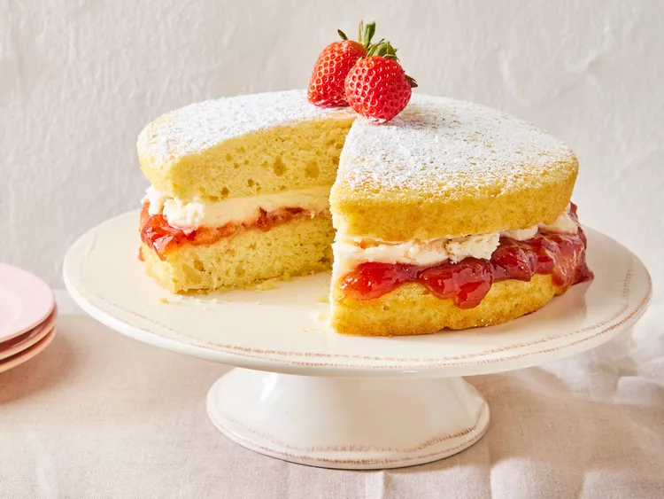

Victoria Sponge Cake

The Victoria sponge cake is a simple British dessert that lives up to its iconic reputation. This light and tender Victoria sponge recipe is the perfect sweet treat to brighten your day.
Ingredients
- All Purpose FLour
- Baking Powder
- Corn Starch
- Salt
- Sugar
- Butter
- Eggs
- Vanilla Extract
- Milk
- Strawberry Jam
Steps
- Sift the dry ingredients together in one bowl and set aside.
- Beat the butter and sugar with a mixer, then beat in the eggs and vanilla.
- Mix in the flour mixture on low speed, alternating with the milk.
- Bake in the prepared cake pans until a toothpick comes out clean.
- Spread the preserves on the top of one cooled cake layer.
- Make the whipped cream, then spread over the preserves.
- Top with the remaining layer, duster with powdered sugar, and top with berries.
Home